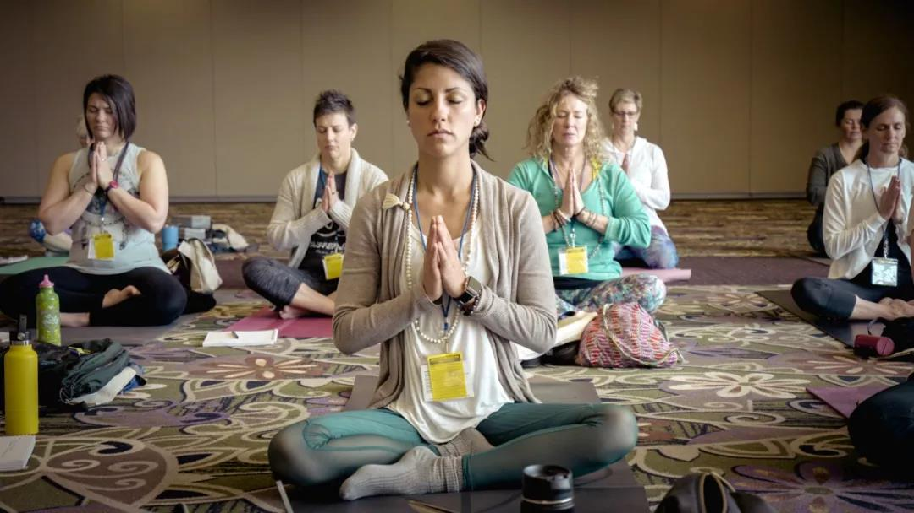
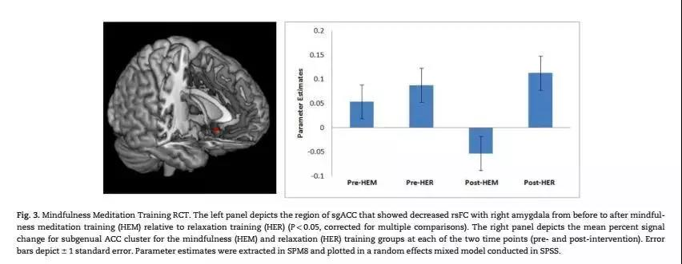
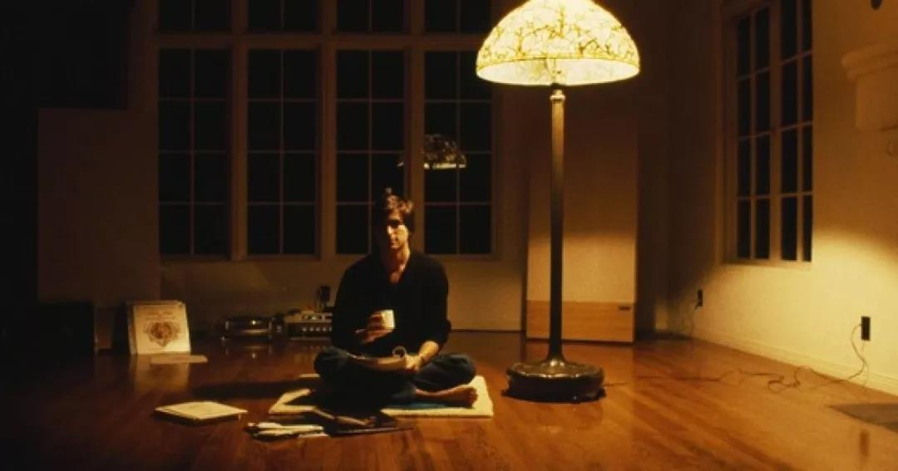
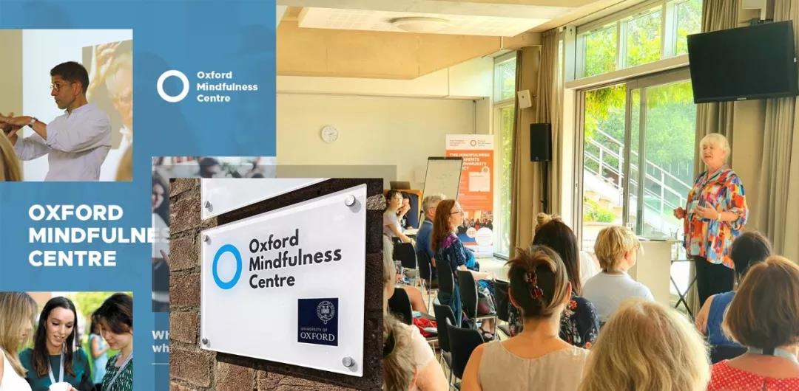

首 页
首 页 量 表
量 表 培 训
培 训 资 讯
资 讯 视 频
视 频 关 于 我 们
关 于 我 们
资讯> 惜命的最好方式，不是养生，是给自己“暂停”
惜命的最好方式，不是养生，是给自己“暂停”
在知乎上看到过一句非常扎心的话：
后来，我才发觉在成年人的世界，天气好，真是生活里为数不多的快乐。
你上一次发自内心的笑，是什么时候？
不是那种面对同事、客户，标准而专业的笑；
不是那种怕父母担心，强打精神的笑；
不是那种怕伴侣生气，委屈求全的笑。
而是身心舒展的、放肆的、心无挂碍的笑。
01
先说一个来访者的故事：
他来自深圳，是一家跨国公司的高管。
事业成功，收入不菲。妻子漂亮贤淑，对他温柔体贴。一双儿女成绩优秀，在深圳最好的学校读书。
简直就是当代成功人士的标准模版。
他快乐吗？
不。
表面上，他是一个沉稳冷静，做事情有条不紊的男人。
私底下，他却是个非常焦虑的人，甚至一度患上焦虑症，经常失眠一整夜，第二天喝很多很多咖啡。
他每天看起来都行色匆匆，仿佛有无数事情需要他去完成。每天睁开眼睛，不是盯着电脑，就是盯着手机。
这个看起来自信满满的人，却对每件事都忧心忡忡、非常没有安全感。
有一次，他到停车场才想起门没锁，于是赶紧回去检查，在电梯上反复地找钥匙。到了才想起来，自己家的门是指纹电子锁，根本不需要钥匙，而且锁得好好的。
在做咨询的过程中，他反反复复地提到一个词——“意义”。
“我现在这样，真的有意义吗？”
“我经常觉得我的人生毫无意义……”
“我会控制不住自己，一直做些毫无意义的事。”
“我的下属经常做些没意义的事……”
随着咨询次数的增加，他慢慢聊到了自己的学生时代：
小学的时候，他画了一幅画，兴冲冲地拿去给妈妈看。而妈妈只是淡淡地说了一句：“这有什么意义？作业做完了吗？”
堵得他一句话都说不出来。
他接过画，呆呆地站在原地，再呆呆地走回房间。在那之后，“意义”两个字就锁在了他的心头。
高中时，他迷上了金庸小说，躲在宿舍的被窝里偷偷看，不敢告诉任何人。
有一次被发现了，老师质问他：“你看这些小说，有什么意义？”
一股羞愧感从他的心底涌起，让他的脸马上红到了脖子根。
他回忆道：“整张脸都滚烫烫的，到现在都还能感到。”
从此，他不再做“没意义”的事，每一件事都会仔细地思考，并力求做到最好。
他会对过去的失败耿耿于怀，对未来的挑战忧心忡忡。虽然事业家庭都非常成功圆满，但却活得非常不开心，整个人很拧巴。
我们可以说，他同时活在过去、未来和现在，处于一种非常撕裂的状态。
引用德国身心灵大师艾克哈特·托利在《当下的力量》中的话就是：
最怕的就是明明人在这里，可是脑子跑到过去，带来了愤怒、伤心、悔恨、愧疚等情绪。或是人在此刻，脑子跑到未来，于是就产生了压力、焦虑、恐慌。
没有办法专注地活在“当下”，是很多中国人生活的常态。
我们的脑海中有太多来自过去、来自别人、甚至来自未来的声音，它们会扰乱我们的思考、阻碍我们的判断、影响我们的情绪、睡眠、工作效率、人际关系……
02
现在的人，特别容易感觉压力大、焦虑和疲惫；
在工作中注意力不集中，没激情、效率低；
在关系里紧张兮兮，没有勇气做自己；
在生活上过度纠结，感觉不自在、容易失眠……
我们越来越需要一颗「暂停键」，让心慢下来，清理杂乱的情绪和念头，稳稳地驻在此刻，获得“当下的力量”。
正念冥想就是这样一颗「暂停键」，人人都可以掌握，人人都可以从中获益。
这种神奇的冥想由来已久，最初源于佛教禅修，是从坐禅、冥想、参悟发展而来，有着几千年的历史。
正念疗法创始人乔恩·卡巴金博士对正念的定义是：
正念是当我们把注意力有意地、不加评判地放在当下的时候所产生或者涌现的那份觉知。
最近几十年，正念冥想在科学的研究下，得到了脑科学、神经科技的支持，在临床治疗上被广泛应用。
研究发现正念冥想的练习，会使我们管理情绪的杏仁核缩小，前额叶皮质增厚（加强对情绪的觉察）。
美国艾奥瓦州迪比克，正在练习正念冥想的人们
研究显示，人体脑部组织会随着正念训练和体验而有所改变，这种情况称为「神经元可塑性」(Neuroplasticity）。
多项数据指出，正念练习除可减低脑部活动时候的注意力分散情况外，更有助增强脑部认知的控制能力。
练习正念同时可以增加大脑左前额部份的活动，连系积极正面的情绪，亦可以降低与压力及焦虑有关的扁桃体活动，且功效显著持久。
正念练习有助学习及增强记忆力，还有效加强脑部转向状态，令我们勇往直前面对挑战。
越来越多的研究表明，当你在练习正念冥想时，实际上是在重塑你的大脑结构。
研究报告
在国外，谷歌、苹果、高盛、Twitter等知名都长期为员工提供正念课程，并把正念冥想作为提高员工创造力的重要手段。
谷歌的正念课程：Search inside yourself | 寻找内在关键字
乔布斯、比尔·盖茨、科比、艾玛·沃森等名人都是正念的践行者，他们运动正念冥想缓解压力、激发创造力。
年轻时的乔布斯在冥想
牛津大学有专门的正念研究中心，斯坦福大学甚至有一整栋正念冥想中心。
Oxford Mindfulness Centre | 牛津大学正念研究中心
著名的时代杂志（《TIME》）曾在2003年和2014年将正念冥想作为封面，记录了正念冥想从兴起到成为一种生活方式：
2003. The Science of Meditation. 冥想科学
2014. The Mindful Revolution. 正念革命
正念冥想可以帮助我们减轻压力、缓解焦虑、提高情绪管理能力、提升专注力和效率、改善睡眠质量。
更重要的是，正念冥想可以培养我们如何和自己相处：不期待、不逃避、去接纳、去包容。
看见心理平台特意邀请西方正念冥想大师——杰克·康菲尔德（Jack Kornfield）和塔拉·布拉赫（Tara Brach）共同研发了这门正念冥想课——
英文原版由杰克·康菲尔德和塔拉·布拉赫原声录制。